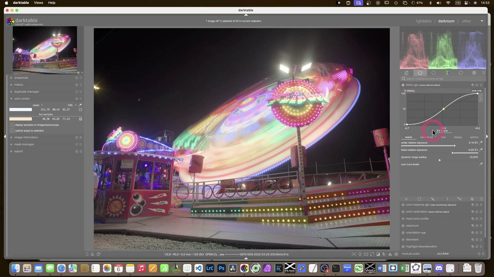
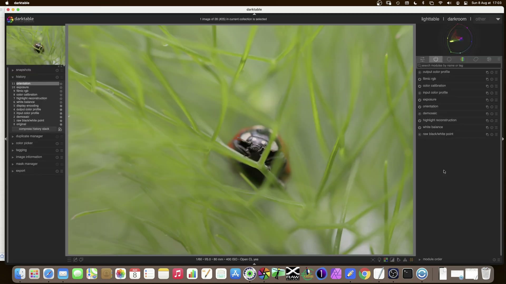
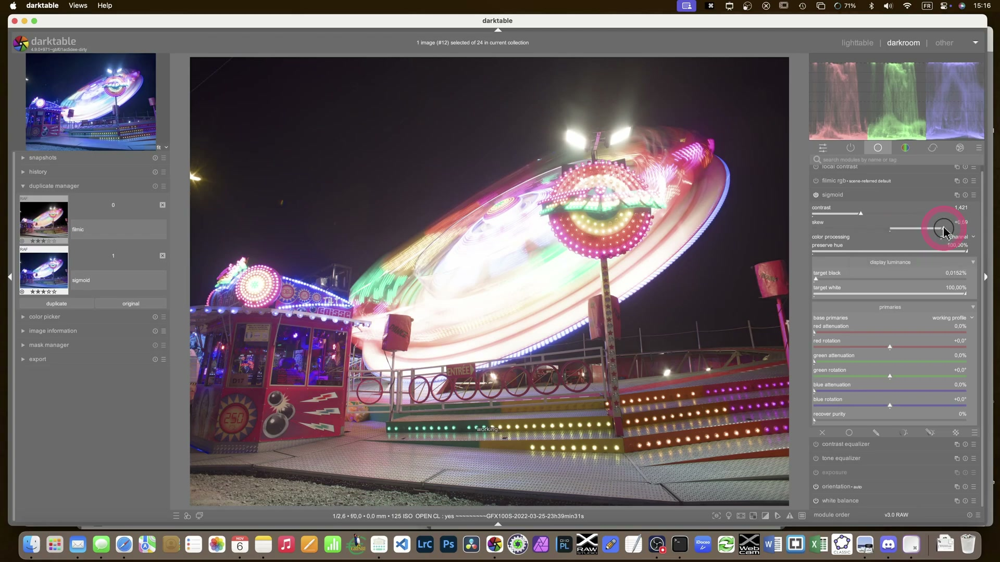
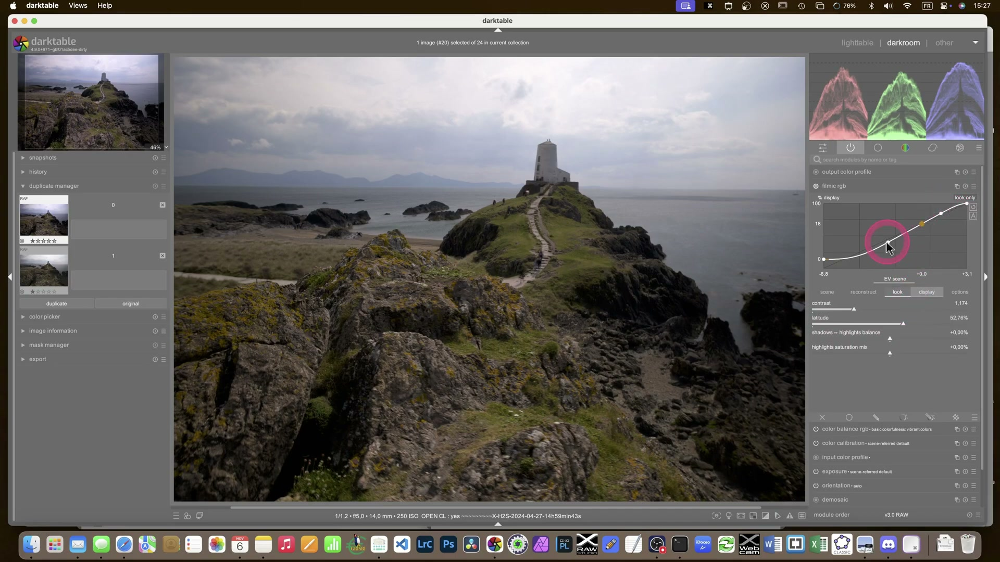

Color Grading Avanzato: Bilanciamento Colore RGB in darktable¶
Il modulo color balance rgb è lo strumento di secondary color grading avanzato per il flusso scene-referred, ispirato al cinema e progettato per operare in spazi cromatici perceptualmente uniformi (JzAzBz e darktable UCS) 1. Sostituisce progressivamente il vecchio modulo color balance, offrendo controllo indipendente su ombre, mezzitoni e luci, con maschere luminose pre-calibrate e gestione precisa della saturazione senza shift cromatici 1.

Color balance rgb ≠ color balance
Il modulo color balance è deprecato per il workflow scene-referred. color balance rgb opera in uno spazio lineare RGB progettato per la correzione cromatica fine, mentre color balance lavora in Lab e introduce artefatti tonali 12.
Panoramica¶
Il modulo si articola in tre schede principali:
- Master: controllo globale di hue, vibrance, contrast, brilliance e saturation
- 4 ways: regolazioni ASC CDL (lift, gamma, gain, offset, power) applicate su maschere luminose
- Masks: configurazione avanzata delle maschere di luminanza e dei fulcri cromatici
La sua forza risiede nella separazione fisica tra luminanza e crominanza, che permette di modificare la saturazione senza alterare la luminosità — un comportamento impossibile nei moduli legacy 1.
A differenza di Lightroom, qui ogni parametro ha una definizione CIE rigorosa:
- Chroma: distanza dal grigio neutro a luminanza costante
- Saturation: rapporto tra crominanza e brilliance (percezione visiva)
- Brilliance: luminanza relativa al contesto circostante 3
Flusso di lavoro consigliato¶
Il flusso ottimale segue l’ordine della pipeline scene-referred 9:
1. Esposizione (exposure)
|
2. Calibrazione colore (color calibration, tab CAT)
|
3. Color balance rgb (per grading creativo)
|
4. Fine-tuning locale (con maschere)
Non invertire l'ordine
Applicare color balance rgb prima di color calibration produce risultati imprevedibili: la calibrazione del colore deve stabilire un punto di partenza neutro prima di qualsiasi grading creativo 1.
Passo 1: Preparazione con color calibration¶
Prima di toccare color balance rgb, assicurati che color calibration sia impostato su CAT16 e che l’illuminante sia corretto (es. “detect from surfaces” o “as shot in camera”) 4. Questo garantisce che i colori siano fisicamente coerenti prima del grading.

Passo 2: Selezione del profilo iniziale¶
Nella scheda Master, usa il menu a tendina profile per scegliere un punto di partenza:
- basic colorfulness|standard: bilanciamento neutro, leggera vividezza — ideale per ritratti 6
- cinematic teal/orange: look da film, con verde-ciano attenuato e arancio accentuato 1
- monochrome|film: conversione in bianco e nero basata sulla sensibilità spettrale delle emulsioni 5
Perché non partire da zero?
I profili sono preset testati che rispettano le regole del gamut e della linearità. Partire da neutral richiede conoscenze avanzate di teoria del colore e aumenta il rischio di clipping cromatico 1.
Passo 3: Regolazione master¶
Applica modifiche globali solo se necessarie — evita di sovraccaricare il modulo:
| Parametro | Valore tipico | Effetto pratico | Quando usarlo |
|---|---|---|---|
| Hue shift | -5° a +5° | Rotazione globale dell’intero cerchio cromatico | Correggere dominanti ambientali (es. luce fluorescente gialla) 1 |
| Global vibrance | 10–30% | Aumenta la crominanza dei colori poco saturi, preservando quelli già vividi | Dare “pop” ai toni medi senza bruciare i rossi del tramonto 1 |
| Contrast | 0.1–0.4 | Aumenta la separazione tonale a crominanza costante | Aggiungere profondità senza desaturare 1 |
| Global saturation | -15% a +25% | Scala la crominanza proporzionalmente all’input | Recuperare vividezza dopo AGX (che desatura naturalmente le alte luci) 6 |

Passo 4: Controllo per zone (4 ways)¶
Questa è la fase più potente: regola separatamente ombre, mezzitoni e luci usando le maschere predefinite 1.
Esempio pratico: ritratto con cielo blu intenso¶
- Nella scheda 4 ways, attiva shadows lift
- Imposta red: 0.95, green: 0.97, blue: 1.02 → apri le ombre senza aggiungere freddo 7
- Attiva highlights gain
- Imposta red: 1.03, green: 0.94, blue: 0.89 → attenua il blu del cielo per evitare clipping 6
- Usa global power per bilanciare:
- red: 0.99, green: 1.00, blue: 1.01 → leggero aumento di brillianza sulle luci senza shift 1
Maschere luminose: come funzionano
Le maschere sono calcolate all’ingresso del modulo, quindi sono insensibili alle modifiche interne. La curva di transizione è definita da shadows fall-off (default: 0.25) e highlights fall-off (default: 0.25) 1.
Parametri principali¶
| Parametro | Range | Default | Descrizione |
|---|---|---|---|
| Hue shift | -180° to +180° | 0° | Rotazione cromatica globale, a luminanza costante 1 |
| Global vibrance | -100% to +100% | 0% | Aumenta la crominanza dei pixel a bassa crominanza, privilegiando i neutri 1 |
| Contrast | -1.0 to +1.0 | 0.0 | Contrasto tonale a crominanza costante; fulcro predefinito a 18.45% 1 |
| Global saturation | -100% to +100% | 0% | Scala la crominanza proporzionalmente all’input, a tonalità costante 1 |
| Global brilliance | -100% to +100% | 0% | Scala la luminanza proporzionalmente all’input, a tonalità costante 1 |
| Shadows lift (R/G/B) | 0.0 to 2.0 | 1.0 / 1.0 / 1.0 | Moltiplicatore RGB per le ombre (maschera < 30% luminanza) 1 |
| Highlights gain (R/G/B) | 0.0 to 2.0 | 1.0 / 1.0 / 1.0 | Moltiplicatore RGB per le luci (maschera > 70% luminanza) 1 |
| Global power (R/G/B) | 0.0 to 2.0 | 1.0 / 1.0 / 1.0 | Esponente RGB globale, normalizzato al white fulcrum (default: 18.45%) 1 |

Gestione avanzata della saturazione¶
Il modulo offre due algoritmi per il controllo della saturazione, selezionabili nella scheda Masks → saturation formula:
| Algoritmo | Vantaggi | Svantaggi | Default |
|---|---|---|---|
| JzAzBz (2021) | Basato su standard HDR, accuratezza teorica | Non considera l’effetto Helmholtz-Kohlrausch (i colori vividi appaiono più luminosi) 1 | ❌ |
| darktable UCS (2022) | Modellato su dati psicofisici reali, gestisce meglio il gamut e l’HK-effect 1 | Richiede più potenza CPU | ✅ |
Quando usare darktable UCS
Sempre. È l’algoritmo predefinito perché mantiene la coerenza percettiva: un rosso intenso appare più luminoso di un grigio chiaro, esattamente come nella realtà 1.
Consigli operativi¶
- Usa il vectorscope: attivalo con
Ctrl+Shift+V. Ti mostra la distribuzione cromatica reale: se i pixel si ammassano oltre il bordo del cerchio, stai uscendo dal gamut 1. - Verifica il clipping: abilita display sample in vectorscope nel modulo color calibration per monitorare i valori cromatici in tempo reale 8.
- Evita il doppio contrasto: non usare contrast in color balance rgb se hai già applicato tone equalizer o AGX contrast — genera artefatti 1.
- Salva i preset per scena: crea uno stile chiamato
Ritratto_esterno_sole,Paesaggio_nuvoloso, ecc., per riutilizzare rapidamente combinazioni testate 7.
Risorse¶
- Modulo color calibration — per la calibrazione primaria
- Modulo AGX — per la compressione tonale pre-grading
- Teoria delle dimensioni del colore — definizioni CIE di chroma, saturation, brilliance
Fonti¶
-
darktable 4.8 user manual — color balance rgb, https://docs.darktable.org/usermanual/4.8/en/module-reference/processing-modules/color-balance-rgb/ ↩↩↩↩↩↩↩↩↩↩↩↩↩↩↩↩↩↩↩↩↩↩↩↩↩↩
-
darktable 4.8 user manual — color balance, https://docs.darktable.org/usermanual/4.8/en/module-reference/processing-modules/color-balance/ ↩
-
darktable 4.8 user manual — color dimensions, https://docs.darktable.org/usermanual/4.8/en/special-topics/color-management/color-dimensions/ ↩
-
darktable 4.8 user manual — color calibration, https://docs.darktable.org/usermanual/4.8/en/module-reference/processing-modules/color-calibration/ ↩
-
darktable 3.4 — color calibration module, https://darktable.fr/posts/2020/12/darktable-3-4-la-revolution-colorimetrique-continue/ ↩
-
[ENG] A guide to AgX in darktable, A Dabble in Photography, https://www.youtube.com/watch?v=iaZ2-QvOHyA ↩↩↩
-
[ENG] Some Color calibration ideas, A Dabble in Photography, https://www.youtube.com/watch?v=MJJR8DJ3rr8 ↩↩
-
[ENG] darktable Full edit #1, A Dabble in Photography, https://www.youtube.com/watch?v=DzdGL30lYjU ↩
-
Manuale_Flusso_Lavoro_darktable, Aprile 2026, darktable 5.4+ ↩